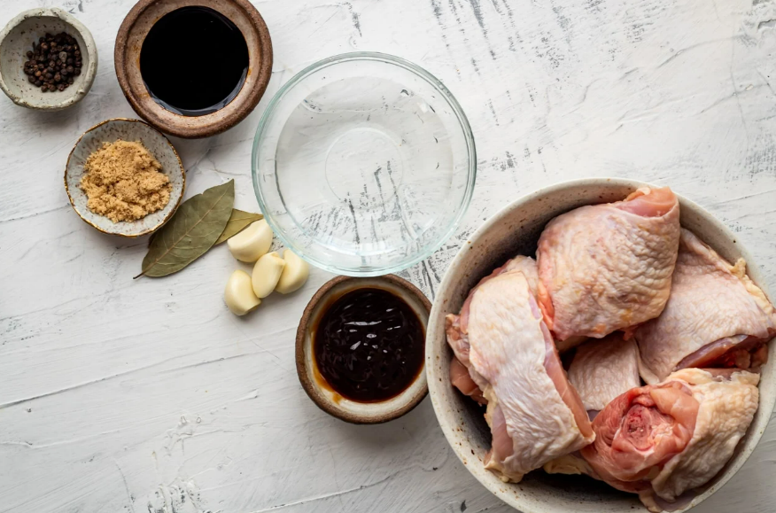
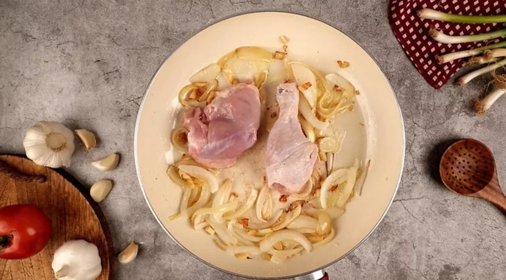
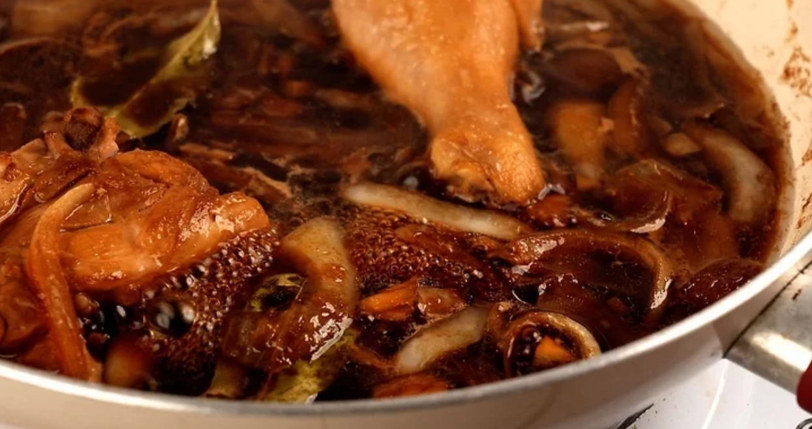
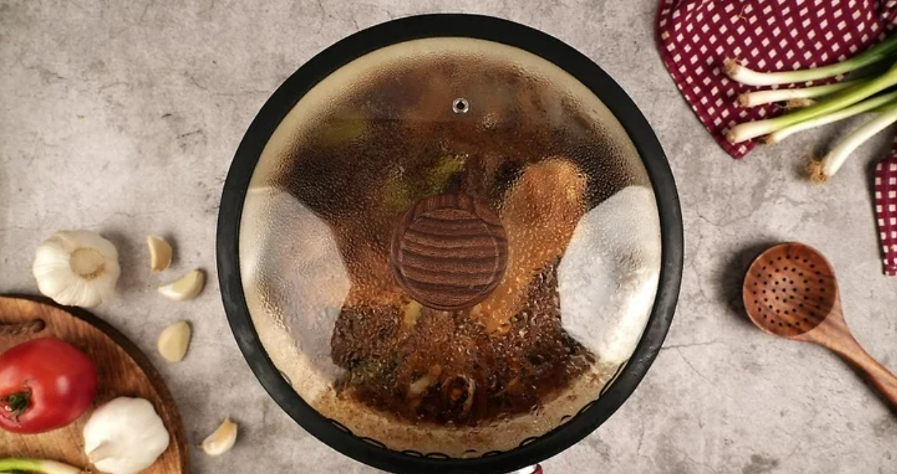
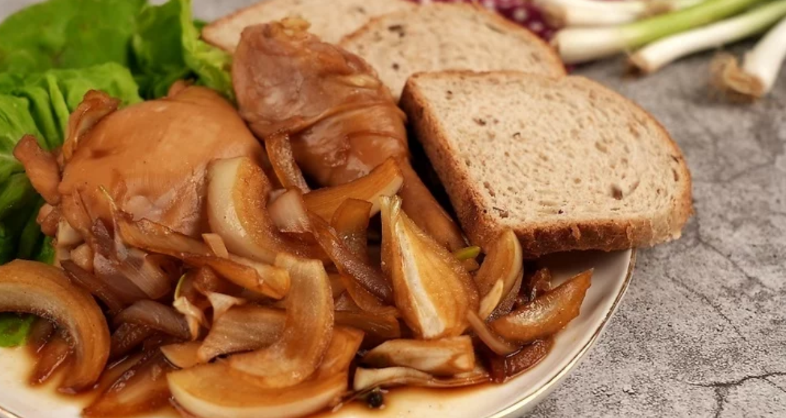

{kind=link}
.jpg)
About Adobong Manok
Chicken adobo, or adobong manok, is a popular pinoy braised chicken dish, cooked slowly in vinegar, soy sauce, and spices until the meat is super tender, juicy, and flavorful. The adobo sauce is savory, tangy, and a little peppery to keep your mouth watering the entire time!
Ingredients
Instruction
Instructions
- 
- Whole chicken, cut into fist-sized pieces
- 1/4 cup soy sauce
- 1 cup vinegar
- 1 tsp sugar
- Pinch of salt and peppercorn
- 3 bay leaves
- 1 cup water
- 1 medium onion, chopped
- 4 cloves of garlic, pressed or chopped
- Cooking oil
- Salt and pepper to taste
- 1.Heat the garlic and onion in oil on medium heat. Add the garlic first and cook until lightly brown. Then add the chopped onions and cook until it becomes translucent. Be careful not to burn the garlic and onion. Use a wooden spoon or spatula to keep the ingredients moving.
- 2.Add the chicken and stir. You don't have to use a whole chicken. Instead, you can use parts of the chicken you like the best.
- 
- 3.Add the soy sauce, vinegar, peppercorn, salt, sugar, water, and bay leaves. Stir and mix everything together.
- 4.Bring the chicken to a boil. Once everything begins to boil, turn your stove to low heat. Add more water to the mixture if you think the dish is too dry.
- 
- 5. Let the chicken simmer for 20 to 30 minutes. Cover the skillet and let the chicken simmer until it is tender. After 15 minutes, spoon the sauce over the chicken. Let it simmer for the rest of the remaining time. If you like your chicken dry, let it simmer for a little longer.
- 
- 6. Serve and enjoy. You can serve the adobon manok on top of rice, with potatoes, or with bread. And pair it with a refreshing glass of cold soda or fresh juice.
- 